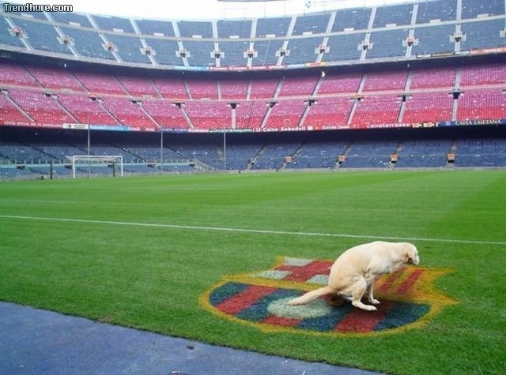

Os ódios e as paixões duma bola que rola
{kind=link}

Sou contra o poder concentrado. Contra a hegemonia. Contra um grande acima de todos os pequenos. Faz-me lembrar o tempo dos reis e das ditaduras. Sou contra o Futebol Clube do Porto e contra o Futebol Clube Barcelona. Que têm semelhanças e virtudes, sim senhor, admito. Que são melhores, mais organizados, confere. Mas são viciados no poder e na vitória. E aí é que a porca torce o rabo. Somos seres de hábitos. Como estão habituados a ganhar e a ter todos debaixo da sua sombra, não admitem sequer a possibilidade de vir a perder. Já odiei o Mourinho, já adorei o Barcelona. Agora adoro o Mourinho e odeio o Barcelona. E porquê? Porque eu gosto dos que perdem, dos que fazem frente, dos que não têm medo de serem parvos para mostrar o que sentem. Não odeio quem ganha. Odeio quem ganha sempre. Um ódio depois de instalado é de mais difícil remoção do que uma simpatia. Por isso nunca perdoarei o Guardiola, herói de outros tempos, por me ter posto a odiar com tanta convição uma equipa que até tem um equipamento giro e teve por lá Figo e Rivaldo. Nessa altura tinham uma óptima equipa que só ganhava de vez em quando. Não controlavam as máfias nem os árbitros nem os nervos ao adversário nem a posse de bola mais do que 70%. Eram uma equipa de futebol. Hoje, tanto Porto como Barcelona, são um cancro no desporto. Competir. Ganhar, perder, empatar, mas competir. Para haver competição tem de haver mais gente a competir e a chegar lá. Senão o desânimo acaba mesmo por matar tudo.
Portugal eliminou ontem a França e está na final do Mundial de sub-20. Uma mini vingança das múltiplas eliminações às mãos dos franceses. Um dia a história foi diferente. Se fosse com os clubes do sistema era mais do mesmo...
Parem com a hegemonia no futebol! Devolvam a emoção à coisa.
Portugal eliminou ontem a França e está na final do Mundial de sub-20. Uma mini vingança das múltiplas eliminações às mãos dos franceses. Um dia a história foi diferente. Se fosse com os clubes do sistema era mais do mesmo...
Parem com a hegemonia no futebol! Devolvam a emoção à coisa.